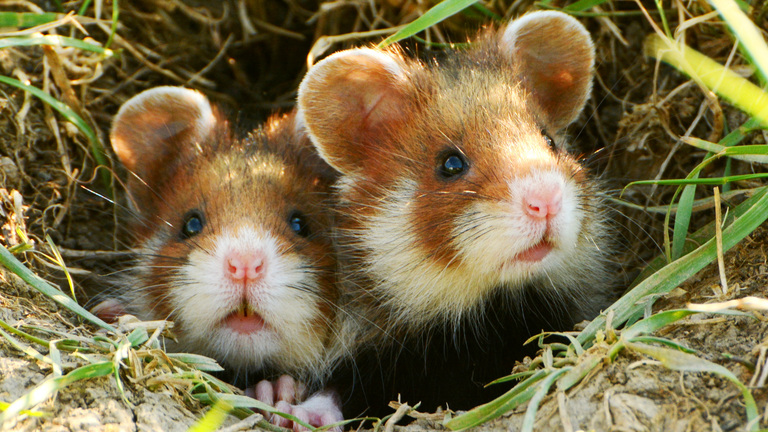

Hamsters are small rodents often known to be house pets. They are furry mammals that come in multiple colors and varies in small sizes.
European Hamsters

European Hamsters
Hamsters are found throughout Europe and Asia. They can be found living in grasslands, steppes, farmland, hedges, meadows and fields. Hamsters also prefer living in warm and dry areas.
European Hamsters are covered in reddish-brown fur and have black bellies, giving them another name, "the black-bellied hamster." The European hamster is also known scientifically as a Cricetus cricetus. They are the biggest breed compared to other hamster breeds.
They are also widely known as wild hamsters. Wild hamsters are to not be kept as pets and are an endangered species. It is said that their population is rapidly declining and could possible be extinct in the next thirty years due to them facing many threats which includes the destruction of their habitats, them being considered as farmland pests and so on.
Survivability and Reproduction
Wild Hamsters live underground in burrow. As I had stated above, hamsters have a low chance of survival. They have been on the endangered list since 2019. In the wild, they are considered a prey in many factors.
There are about ten to fifty thousand European hamsters left according to Germany scientists. Some animals that may attack European hamsters are foxes and buzzards. The European hamster can live up to eight years which is a lot compared to other breeds of hamsters.
A female hamster will have a pregnancy that varies in between two to four weeks. Their litter will contain about six to eight pups and weigh around two to three grams each. A female hamster should only reproduce two to three litters their entire life and can start reproducing at the age of one month.
Hamsters are solitary animals and live alone. From birth, they live with their mother for about twenty one to twenty eight days. If hamsters are kept together, they will fight. Mothers may also cannibalize their offspring over stress, fear, scent and even due to lack of food.
Hamster VS Fox
Diet
Hamster Clings onto Branch for Food
Hamsters are omnivores, meaning they eat both plants and animals. In the wild, European hamsters can find fruits, seeds, grain, roots, insects, and other small animals feast on. Some insects they eat are crickets, mealworms and larvaes. They may also eat frogs and lizards as well.
European Hamsters like to forage for food, storing it in their cheek pouches. The pouch can carry up to one and a hlaf times their weight which is approximately around forty to eighty grams. Food is kept in the burrow that they live in then to be eaten for later.
Hamsters consume food differently every season. During hibernation, hamsters wake up every five to seven days to eat. Hibernation is during the months of October to March. Summer is the time when Euopean Hamsters start to stock up food just before hibernation.
Eating seeds is a good factor for wild hamsters as they help disperse seeds into the ecosystem. As we know, wild hamsters are known to be farmland pests. They may scavenge for vegetables and plants as well. This causes damages to farmland which is one of thes big factors that led them to be endangered.